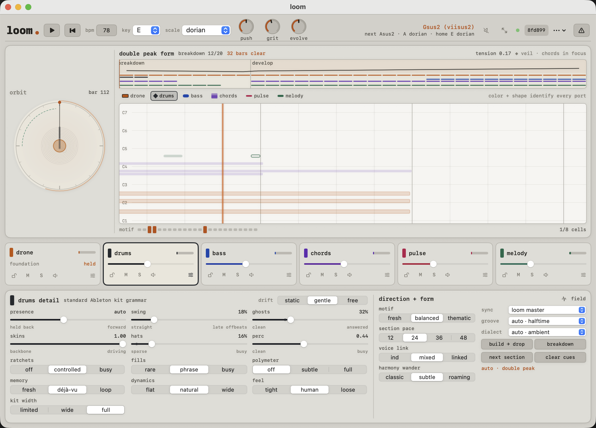
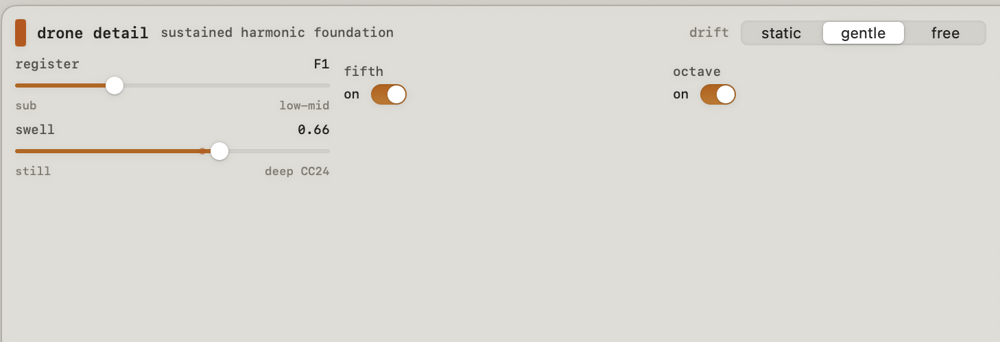
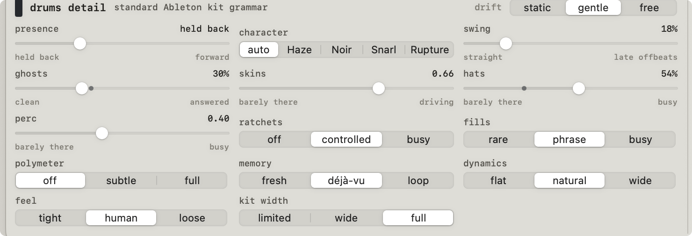
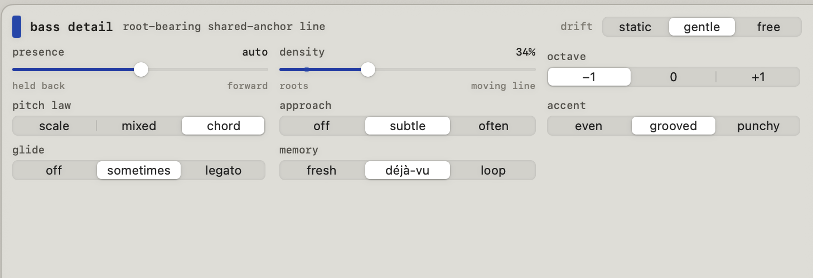
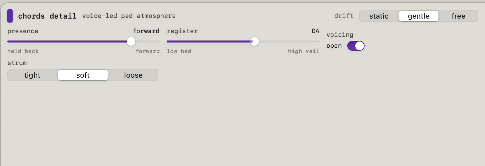
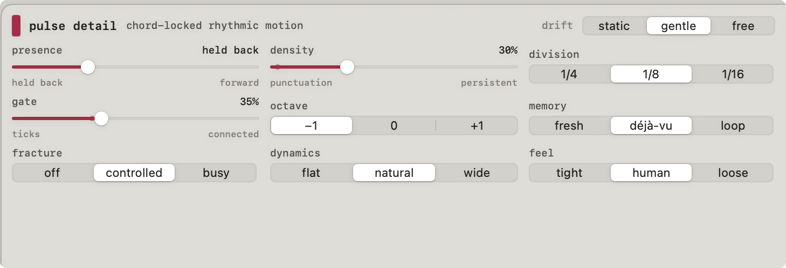
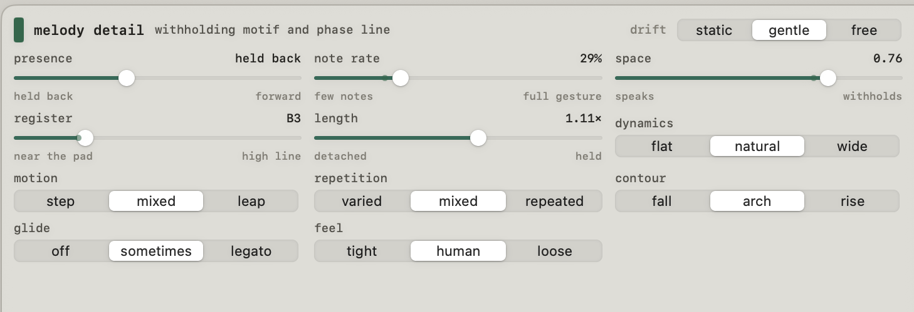

/ 01
Deterministic
Every note is a pure function of seed and time. Save a seed and you save a whole evolving performance — return to it and it keeps developing the same way.
One seed becomes a complete, evolving arrangement — drone, drums, bass, chords, pulse and melody — that develops over minutes and never quite repeats.
Not a step sequencer. Not a DAW. It generates control, and streams a MIDI port per voice into your own instruments.
Apple Silicon · macOS 14+ · seven virtual CoreMIDI sources · GPL-3.0
loom driving six tracks in Ableton, recorded live in a single pass with no edits. This is the raw generative output — your own instruments would give it a different voice.
Complexity lives in three places only: the interaction between simple voices, the controls you hold, and the passage of time. No single mechanism is complicated — the music is.
Every note is a pure function of seed and time. Save a seed and you save a whole evolving performance — return to it and it keeps developing the same way.
A shared harmony engine — key, scale, an advancing progression, voice-leading — keeps every voice in key and vertically coherent, however abstract the surface gets.
A conductor shapes tension over minutes; a watchdog listens for wallpaper and forces a real event when the music has been comfortable for too long.
Four stable tiers: transport and three performance macros, the orbit and moving form strip, six voice strips, and one fixed inspector. Continuous parameters are truthful sliders; musical decisions are switches. Press f to fill the screen with the orbit.

Every voice streams its own virtual CoreMIDI source, so each takes its own track and its own sound. Select a strip and its inspector opens — continuous controls only where an in-between value has real audible meaning. loom makes the notes; your instruments make the sound.
The sustained foundation: root, fifth and octave held for minutes, re-attacked once per harmonic span.
A dependable kick-snare-hat pocket on a General MIDI kit, with authored fills and phrase-scale fractures at higher grit.
Monophonic root-and-movement. States the harmony, then gets out of the way; walks approach tones into each change.
A voice-led harmonic bed of swells and tied pad attacks, common tones held through the changes.
Chord-locked rhythmic movement — one held current-chord tone that supplies motion without becoming a second melody.
A withholding lead that develops motifs — recalling, transposing and inverting earlier phrases — over a drifting phase loop.
Select a strip and its inspector opens below. Each voice exposes only the controls that shape its role — the real panes from the app.






The failure mode of generative music is a piece where each loop differs slightly but the whole stands still. loom moves at every scale, and gives you knobs over the rate of change itself.
Per-step probability with correlated humanize — micro-timing and dynamics move together from one shared feel, so it reads alive, never broken.
A modulation matrix of slow LFOs, bounded random walks and a reaction-diffusion field creeps the generator parameters themselves across bars.
A conductor draws a seeded tension arc over minutes — builds, drops, breakdowns and reprises — so the piece has long-form shape, not a flat wash.
Download the app, enable the speaker to hear a sketch immediately, then route the six sources into your DAW — one track per voice, a big dark pad on drone, a drum rack on drums.
Apple Silicon · macOS 14+
Download loom.appOr build from source: